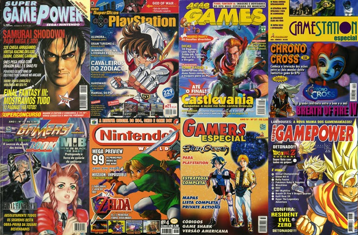
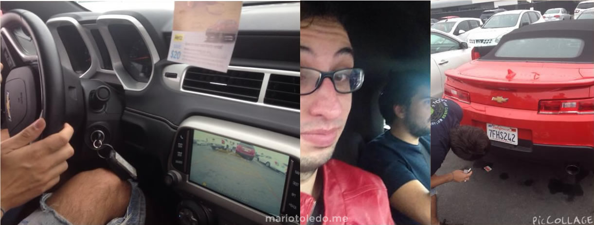
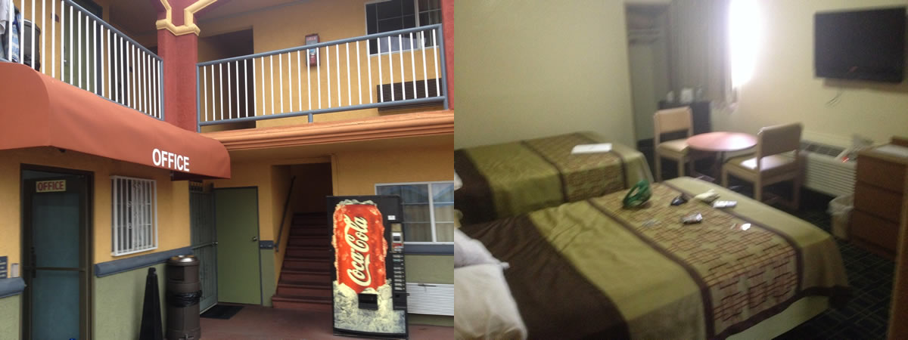
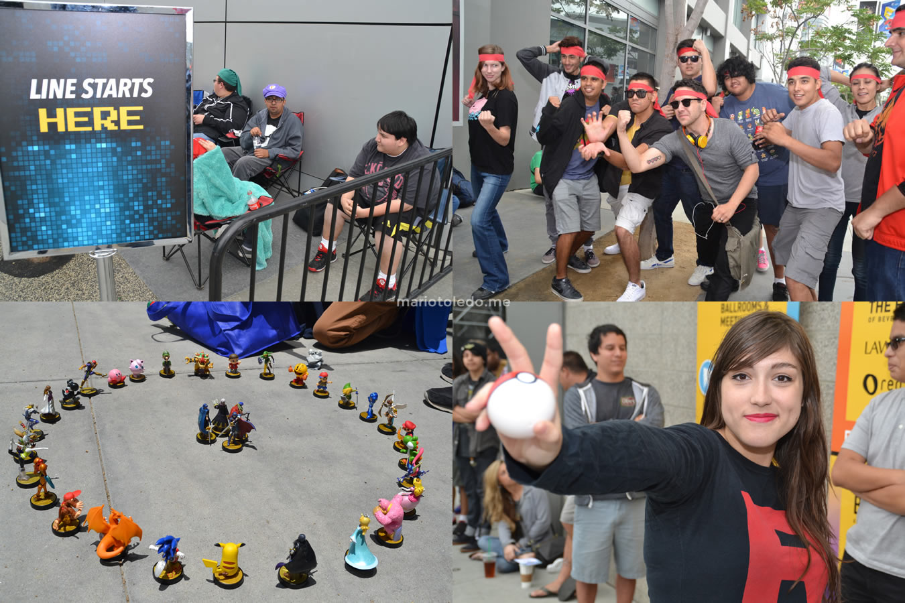
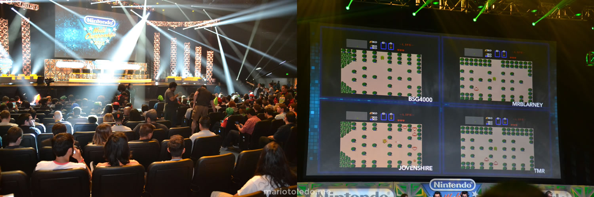
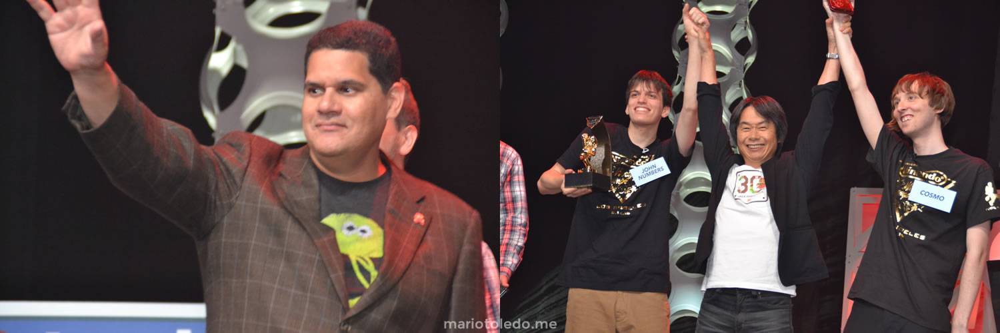

If you like video games, you know something about E3. Considered as the most important event for the video game industry, the Electronic Entertainment Expo is being held in Los Angeles since 1995 by the Entertainment Software Association. This is the place where developers, publishers and other manufacturers introduce their line-up of products to retailers, the press and, more recently, directly to the public.
I don't really remember the first time I watched an E3 conference, but I do have great experiences from watching them over the internet, and celebrating when a desired announcement was made. But more than that, I wished to be one of that journalists, that were in the middle of the live conference, covering the announcements and cheering with the reveals. In other words, I had a dream to be in E3.
In 2015, I finally went to E3, and had this so desired experience. After 6 years from this trip, and after the first digital version of the event, I decided to write everything that I learned by going to the expo. But just to make it clear: this is not a post about dreams that comes true, and more about the reality of E3 and the background of working as a game journalist.
As a game fan from Brazil, I grew up reading gaming magazines. They were a huge success in the 90's and 2000's, as we had (probably) more than 15 kinds of magazines to be bought. Being a game journalist was the closest job in the game industry that video games fans could think of, and most of them grew up with the idea to work in a video game magazine.
 Video game magazines from Brazil
With the upcoming of Web 2.0, users could create their on website really easily, and start writing their own stuff. As many video game fans had this dream to become journalists, a lot of video game websites were created since them.
In 2010, I joined DS-Party, and started to write Previews and Reviews for the website. We decided to move to N-Party, and the site grew as well. In 2011, I started to manage the whole website, adding routines like weekly planning meetings, content reviewing, people management and improving our content development as well. Most of our contributors were professional journalists or students, and we had an environment really close to a profesisonal editorial. We really grew as one of the most know websites about Nintendo content in Brazil, and had really good numbers for a gaming website.
As N-Party grew as a reference for gaming fans, we also were neglected by many companies and even other professional (or bigger) websites. At the time, I used to adapt my routine to the content development, by waking up early, writing hard news, scheduling content for the day, managing social media, and trying to manage the website while working as a software developer. Besides all my effort, it was really hard to stand out when you have so many people producing content on the same time. Also, in 2015, YouTube and Social Networks already had a way bigger influence over content development. This was a constant anguish for me, because I strongly belived we had a great content produced by the best team we could have.
As I grew as a content producer, and started to meet profesional journalists, the idea of being in E3 grew in my mind from time to time. But going to E3 is not so easy as many people think: as a brazilian, of course that you need to have, at least, a visa and a passport, and I didn't have any of them (so far, I had never traveled outside São Paulo). Also, as many people don't know, you must register yourself as journalist at E3 and be accepted as a media (at least in 2015). Finally, going from Brazil to Los Angeles is an expensive trip (currently, the average cost for the flight, hotel and food for the expo days would be R$ 7000 - something about U$ 1300).
It happens that I received an opportunity to join as a partner from the current company I was working to, and received the exact amount of money that I needed for the trip from my termination. In February, I signed the registration form on E3 website, and provided all necessary info (including links from our website and my latest contribution). After about 1 week of review, I received a positive response, also receving my digital badge and a visa letter to help my acceptance in the country. This helped me so much to ask for my passport and visa, as I had all necessary info to make sure that I was only going to Los Angeles to cover E3 and had all necessary money to do it.
I listened to some friends saying that, if they had the opportunity to go to E3, they would never go to work there. This is not something that pass on my mind: I really wanted to go to do the best I could, and have all the experience that E3 could offer me. For me, it was a "one in a lifetime" experience.
Of course that I was also afraid. That was my first international trip, I was going all by myself, and many things could go wrongly. Also, this money could fit some cultural productions I used to produce here, in Brazil. In May, I talked to a friend of mine that, in the time, was the editor for Nintendo World (an official Nintendo magazine from Brazil). He convinced me that going to E3 was an investment not only for me, but also for my website as well. Also, this could reflect in my future cultural productions, as I would learn how things worked outside Brazil and meet potencial stakeholders or other people. Finally, he was also going to E3, so he would give enough support to everything that I would have trouble with.
You must have many assurances before going to another country from Brazil. Firstly, you need to make all necessary reservations. Also, print all necessary documents, including trip planning, reservation confirmation and many other things that may help you during the immigration checkpoint. Also, you need to have at least another credit card (if the one you have does not works) and have cash money if everything goes wrong.
In my flight, I met a brazilian woman that was traveling to see her son's graduation from Los Angeles University. She told me that it was her first trip since her husband died, and asked if she could tag along as she was a bit scaried. I decided to help her and I almost got arrested as she had troubles in the immigration (she barely knew how to speak in English and needed to explain what she was going to do in Los Angeles), while I was trying to help her. In exchange, she and her son gave me a ride to my hotel (and it was the first time I entered in a Camaro).
 I was lucky to meet good people to have a ride from the airport, but don't get ride with strange people, alright?
I was short of money, so I made reservations in a really economic hotel (also, that was the name of the hotel - Economy Inn Hollywood). Let's say that it was not the most confort place in LA to stay, besided the fact that I could reach the subway by 5 minutes of walk.
 The econonomic hotel named Economy Inn. Maybe that's a themed hotel?
So, I had hot shower and two beds, not much to complain, right? Well... not really. Let's say that the neighborhood was not... friendly. There were lots of homeless people trying to mess with you, as well as some guys from some kind of gangs that are not really help to see a white guy walking on their streets. In one of the days, I woke up really early for the expo, and some guy started to yell for me from the other site of the street. He stoped his car, and said some "f" words followed by "get out here, white guy". He also tried to come after me but, you know, I'm from São Paulo, so we have some instincts when this kind of things happens.
I learned really quickly that I should spend most of my time far away from the hotel. So, in the first 2 days before start of E3, I took a tour by LA on foot. I went all over the places to get used to, and went many times to the Hollywood Boulevard (I could get there by 30 min of walk).
Of course there are great places to visit in LA. The Walk of Fame is a must stop if you have time. There are turists walking all the way on the street, and so many actors playing a wild range of characters. You just need to be aware of people trying to take free money from you - in my experience, a guy made me listen his music and tried to sell me his CD by U$ 20.
After 25 years, Nintendo decided to promote another version of the Nintendo World Championships 1 day before the start of the E3 pre-conferences, in LA. Players from all over USA competed in qualifiers for the best score in Ultimate NES Remix, and the best 8 players, alogside 8 invited players, competed, in person, during the finals. 7 different games were used during the regular stages of the championship, while the finals consisted in playing custom stages in Super Mario Maker.
I have been to many gaming championships before (and even eSports events), but nothing compares to the experience I had with Nintendo World Championships. I met so many wonderful people on the line, and everyone was so happy to be there (and so excited to what they were going to experience), that made me feel so good to be there.
 The line at Nintendo World Championships
Differently from other competitive tournaments, Nintendo focused on a more fun and enjoyable show to watch. As much as I can tell, everyone on the crowd was having so much fun while the players smashed in another ones while driving in Mario Kart, had hard times while flying in Balloon Fight, or even got through lava in Super Metroid. The finals were also incredible, when both players had to figure how to beat the same stage of Super Mario Maker (with two different solutions). This was like the best Nintendo way to create an "eSports" event.
 Can you imagine a whole room of people cheering for someone playing The Legend of Zelda? That was Nintendo World Championships.
Also, Reggie Fils-Aimé and Shigeru Miyamoto joined the stage to not only play in the tournament, but also to hand the trophy to the winner. For anyone present there, it was a magical moment. I had seen Reggie once, in Brazil (he came by surprise, in 2012, for some business inquires), but seing Miyamoto in person was an indescribable feeling. I have played Miyamoto games for so long, and he is one of my inspirations as a Game Developer. I was seeing an idol from 2 feets apart.
 Reggie Fils-Aimé and Shigeru Miyamoto joined the stage to show they are real.